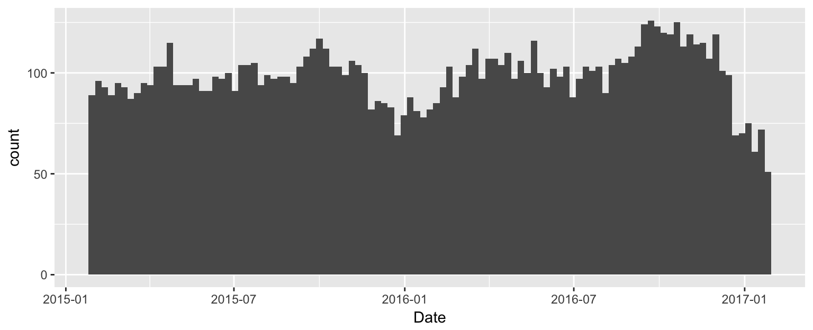
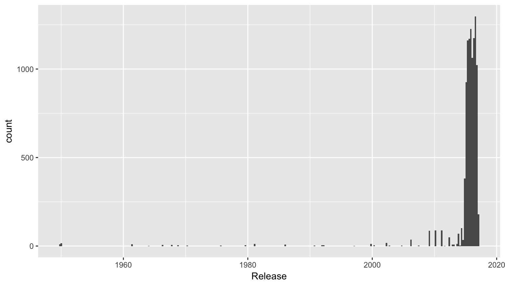

Heike Hofmann
lubridate packagenow(), Jan-1-2000ymd, mdy, dmy, …hm, hms, …ymd_hms, mdy_hm, …Example:
mdy("03-01-2017")## [1] "2017-03-01"year, month, week, wday, mday, yday, hour, minute, …hour(x) <- 12Examples:
month(now())## [1] 2wday(now(), label = TRUE)## [1] Sat
## Levels: Sun < Mon < Tues < Wed < Thurs < Fri < Satend_date <- now()
# span is interval, years(1) is duration
span <- end_date - years(1)
span## [1] "2016-02-25 16:32:13 CST"end_date - days(10)## [1] "2017-02-15 16:32:13 CST"movies <- read.csv("../data/movies.csv")
summary(movies$Date) # factor variable: number of movies in theaters## 2016-09-23 2016-10-21 2016-09-16 2016-09-30 2016-10-07 2016-10-14
## 126 125 124 123 120 119
## 2016-11-04 2016-12-02 2015-10-02 2016-05-20 2015-04-24 2016-11-18
## 119 119 117 116 115 115
## 2016-11-11 2016-09-09 2016-10-28 2015-09-25 2015-10-09 2016-03-18
## 114 113 113 112 112 112
## 2016-04-22 2015-09-18 2016-09-02 2016-04-01 2016-04-08 2016-08-19
## 110 108 108 107 107 107
## 2016-11-25 2015-11-06 2016-05-06 2015-07-24 2016-08-26 2015-07-10
## 107 106 106 105 105 104
## 2015-07-17 2015-11-13 2016-03-11 2016-04-15 2016-08-12 2015-04-10
## 104 104 104 104 104 103
## 2015-04-17 2015-09-11 2015-10-16 2015-10-23 2016-02-19 2016-06-24
## 103 103 103 103 103 103
## 2016-07-15 2016-07-29 2016-06-10 2016-07-22 2016-12-09 2015-06-26
## 103 103 102 101 101 100
## 2015-11-20 2016-05-13 2016-05-27 2015-08-07 2015-10-30 2016-12-16
## 100 100 100 99 99 99
## 2015-06-12 2015-08-21 2015-08-28 2016-03-04 2016-06-17 2015-05-22
## 98 98 98 98 98 97
## 2015-06-19 2015-08-14 2016-03-25 2016-04-29 2016-07-08 2015-02-06
## 97 97 97 97 97 96
## 2015-02-27 2015-03-27 2015-09-04 2015-04-03 2015-05-01 2015-05-08
## 95 95 95 94 94 94
## 2015-05-15 2015-07-31 2015-02-13 2015-03-06 2016-02-12 2016-06-03
## 94 94 93 93 93 93
## 2015-05-29 2015-06-05 2015-07-03 2015-03-20 2016-08-05 2015-01-30
## 91 91 91 90 90 89
## 2015-02-20 2016-01-08 2016-02-26 2016-07-01 2015-03-13 2015-12-04
## 89 88 88 88 87 86
## 2015-12-11 2016-02-05 2015-12-18 2015-11-27 2016-01-29 2016-01-15
## 85 85 83 82 82 81
## 2016-01-01 2016-01-22 2017-01-06 (Other)
## 79 78 75 392library(lubridate)
movies$Date <- ymd(movies$Date)
summary(movies$Date) # makes more sense## Min. 1st Qu. Median Mean 3rd Qu.
## "2015-01-30" "2015-07-31" "2016-02-12" "2016-01-31" "2016-08-05"
## Max.
## "2017-01-27"movies %>% ggplot(aes(x = Date)) + geom_histogram(binwidth=7)
movies data set,release to a date format,as.numeric(months(1))?movies$Release <- ymd(movies$Release)
movies$Days2 <- movies$Date - movies$Release
movies %>% ggplot(aes(x = Release)) +
geom_histogram(binwidth = 90)
str(movies$Release)## Date[1:10327], format: "2017-01-17" "2017-01-24" "2016-12-22" "2017-01-24" ...as.numeric(months(1))/(60*60*24) # that's the average number of days in a month## [1] 30.4375